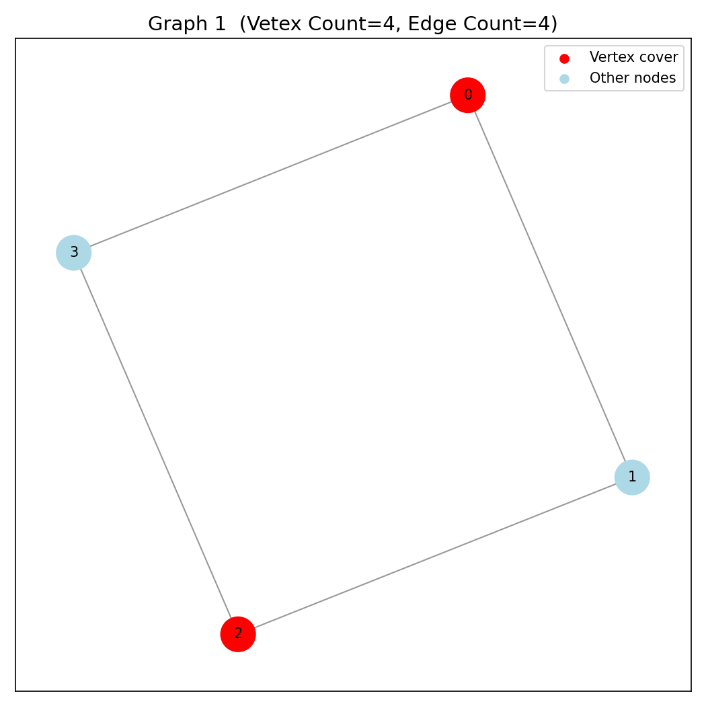

Vertex Cover Problem On Bipartite Graphs
In this project, we study the NP-hard Vertex Cover problem, focusing on a special and tractable class of graphs: bipartite graphs. We implement the fundamental algorithms designed specifically for this case and build a framework that can be applied to real-world scenarios; most notably, computing the vertex cover of a bipartite graph and solving a practical application: determining the minimum number of charts required to display the price movements of multiple stocks.
This report is organized as follows: we first present the theoretical background, then discuss the key theorems and algorithms, and finally develop and apply the code to these real-world problems. Click the link below for GitHub repo.
🎯 Vertex Cover Problem
Given a graph ;
A vertex cover is a set of vertices such that every edge in has at least one endpoint in . Formally:
A vertex cover “touches” every edge; no edge is left completely uncovered.
The Vertex Cover Problem asks to find a vertex cover of minimum possible size. Mathematically:
Example:
Consider this simple graph:
A --- B --- C
Possible vertex covers:
- (covers both edges)
- (also covers both edges)
- (but not minimal)
So, minimum vertex cover size = 1 i.e, .
Complexity:
-
For general graphs (not necessarily bipartite),
the Vertex Cover Problem is NP-hard; we don’t know any polynomial-time algorithm to find the minimum one. -
For bipartite graphs, however, König’s theorem + polynomial matching algorithms (like Kuhn's Matching) give a polynomial-time solution.
Connection to Independent Set:
Complementary view:
An independent set is a set of vertices with no edges between them. If is an independent set, then is a vertex cover. So:
Since maximum independent set is also NP-hard, so is minimum vertex cover.
🎯 What is a Matching?
Given a graph a matching is a set of edges such that no two edges share a common vertex. Formally:
So each vertex is incident to at most one edge of the matching.
Maximum Matching Problem:
The maximum matching problem asks to find a matching of maximum cardinality (i.e., with the largest number of edges). That is:
Example:
A --- B --- C --- D
Possible matchings:
Maximum matching size = 2 i.e, .
Complexity:
For bipartite graphs:
- The problem can be solved in polynomial time.
- Hopcroft–Karp algorithm → , Kuhn's algorithm →
- Can also be reduced to a maximum flow problem.
For general (non-bipartite) graphs:
- Solved using Edmonds’ Blossom algorithm (polynomial time but more complex ).
Connection to Vertex Cover (König’s Theorem):
There’s a deep duality between vertex cover and matching. In bipartite graphs, these two have the same optimal value; that’s König’s theorem:
Example Combining Both:
Let’s take the bipartite graph:
X1 --- Y1
| |
| |
X2 --- Y2
- Maximum Matching: size = 2;
- Minimum Vertex Cover: size = 2;
🎯 König’s theorem
In any finite bipartite graph the size of a maximum matching equals the size of a minimum vertex cover:
Where is the maximum number of pairwise disjoint edges (maximum matching size) and is the minimum number of vertices meeting every edge (minimum vertex cover size). We prove and then show by constructing a vertex cover of size equal to a maximum matching.
Easy direction:
Every edge in a matching must be covered by distinct vertices of any vertex cover (no two matched edges share an endpoint in a matching). Thus a vertex cover must contain at least one endpoint from each matched edge; so the cover size is at least the matching size. Hence
Constructing a cover of size :
Let be a maximum matching in the bipartite graph . We will build a vertex cover with , proving .
Build the alternating-reachability set:
- Call a vertex free if it is not incident to any edge of .
- Consider the directed exploration that starts from all free vertices in and follows alternating paths:
- From a vertex in follow edges not in to .
- From a vertex in follow edges in to .
- Let be the set of vertices reachable from free vertices of by such alternating paths. Partition as and .
Intuition: is exactly the set of vertices reachable by alternating paths starting at unmatched left-side vertices.
Define the candidate cover:
In words: take all vertices of that were not reached, together with all vertices of that were reached.
We will show; is a vertex cover and .
is a vertex cover:
Take any edge with , . We show or .
- If then by the definition of every edge not in that is outgoing from to leads to a reachable . In particular, if and , then .
- If , and , then the matched edge from goes to some ; but our alternating reachability rules ensure that when a vertex in is reachable, the matched edge goes to the corresponding vertex only if that vertex is also reachable; so again .
- If , then .
Thus every edge has at least one endpoint in . So is a vertex cover.
A compact way to see this: if an edge has its -endpoint reachable then its -endpoint is reachable too (by alternating-step rules) and so in ; otherwise the -endpoint itself is in .
Proving :
We count how many vertices of come from and from .
Claim A. Every vertex of is matched (incident to an -edge).
Proof: If is reachable by an alternating path, the path alternates and the last step to came along a non-matching edge from some ; but by the alternating rules from we follow the matching-edge (if any) to continue. If were unmatched, the alternating path from a free to would be an augmenting path (starts and ends at free vertices and alternates), contradicting maximality of . So all vertices in are matched.
Claim B. Every vertex of is matched.
Proof: If were unmatched , then it would have been in the starting set of the exploration and thus in . So it must be matched.
Thus every vertex in is matched by . Moreover, each matched edge of has exactly one endpoint in :
- If an edge has , then while (otherwise would be reachable via that matched edge), so .
- If , then matching forces ; then while .
Therefore the matched edges give a bijection between elements of and vertices of : each matched edge contributes exactly one vertex to , and every vertex of is matched and corresponds to a distinct matched edge. So .
🎯 Implementation of Bipartite Vertex Cover Problem
Directory: bip_vertex_cover
Problem Statement: To find the Veterx Cover of an input Bipartite Graph, and to visualise the results using a python script.
Implementation Workflow:
- The C++ driver program
main.cppreads multiple test cases fromtests.txt. - Bipartite Vertex Cover Framework (
utils.hpp):- Verifies if a graph is bipartite using 2-Coloring algorihm and outputs the Left and Right subgraphs
- Uses Kuhn's Algorithm to find the maximum matching in the given bipartite gtaph
- Uses Konig's Theorem to find the Vertex Cover from the given matching.
- Outputs the Vertex Cover to the
mainfile.
- The outputs from the
mainare passed on to thevisualise.pyas directive for plotting graphs and representing the vertex cover. run_all.shis a bash script to automate the process of creating graph plots.
Kuhn’s Algorithm:
Kuhn’s algorithm is a DFS-based augmenting path algorithm for maximum bipartite matching.
- For each left vertex , try to find an augmenting path using DFS.
- If an unmatched right vertex is found, or we can re-route an existing match, we match .
- Each DFS either:
- increases the matching size by 1, or
- returns false.
Worst case: O(V × E)
Minimum Vertex Cover Using König’s Theorem:
Given a maximum matching , the minimum vertex cover in bipartite graphs is computed by:
- Mark all unmatched left vertices.
- Run DFS/BFS alternating between:
- non-matching edges (L → R)
- matching edges (R → L)
- Let:
visL= visited left verticesvisR= visited right vertices
- The minimum vertex cover is:
(Left \ visL) ∪ (Right ∩ visR)
Total Complexity:
Building adjacency: O(E)
DFS alternation: O(V + E)
Total: O(V × E) (due to matching step dominating)
Python Visualization Workflow:
A Python script reads the C++ output:
- Draws the original graph using NetworkX
- Colors:
- Vertex cover nodes in green
- Others in blue
- Improper edges in dashed red (if user-specified L/R fails)
- Saves images into
visuals/case_i.png
Run as:
python3 visualize.py < output_for_python.txt
Input Format (tests.txt):
Each test case:
num_vertices num_edges
u v
u v
...
Example:
4 4
0 1
1 2
2 3
3 0
Output:

Running Everything:
We provide a script run_all.sh, to run everything at once. Run with:
./run_all.sh
🎯 Chart Minimisation Problem
Directory: chart_minimisation
Problem Statement: Given the price history of stocks over time points, we want to visualize these stocks using the minimum number of charts, where:
- Each chart may display multiple stocks, and
- A stock can be placed together with another stock * on the same chart only if stock is strictly lower than stock at every time point.
Formally, for two stocks represented as vectors:
Stock can appear on the same chart as stock if:
This defines a partial order among the stocks.
It is a direct instance of a very important and widely applicable combinatorial problem:
Minimum Path Cover in a DAG ↔ Maximum Matching in a Bipartite Graph
Minimum Path Cover: Smallest possible number of paths needed to cover all vertices without breaking the direction constraints.
This problem can be extended to a range of real world problems such as;
- Task Scheduling with Precedence Constraints
- Exam or Class Timetabling
- Layering and Ranking in Graph Drawing
- Comparative Genomics / DNA Sequence Evolution
Graph-Theoretic Reformulation:
- Create a directed edge if stock is strictly lower than stock at all time points.
- Convert this DAG into a bipartite graph by duplicating nodes into Left and Right partitions.
- Find the maximum bipartite matching, which corresponds to the maximum number of stock pairs that can be placed consecutively on a single chart.
- Using Dilworth’s theorem / minimum path cover in DAGs, the minimum number of charts required is:
Dilworth's Theorem:
Dilworth’s Theorem is a fundamental result in order theory that connects two important concepts in a partially ordered set (poset):
- Chains → sequences where every pair of elements is comparable
- Antichains → sets where no two elements are comparable
In any poset, the minimum number of chains required to cover all elements equals the size of the largest antichain. In simpler terms: If many elements cannot be compared with each other (a large antichain exists), we need at least that many chains to cover the set.
In the Chart Minimisation problem:
- Each stock is an element in a poset (defined by dominance of prices).
- Each chart corresponds to a chain of comparable stocks.
- The minimum number of charts equals the size of the largest antichain.
Using bipartite matching, we compute this via the equivalent formulation:
Implementation Workflow:
- The C++ driver program
main.cppreads multiple test cases fromtests.txt. - The stock data is passed to the
MinChartsfunctions, which creates the required Bipartite Graph of stock data. - The
find_matchingfunction ofutils.hppoutputs the maximum matching of the bipartite graph, using Kuhn's algo. - This matching is then passed to the
build_chainfunction ofutils_chart.hppwhich outputs the chart groupings for all the stocks. - The outputs from the
mainare passed on to thevisualise.pyas directive for plotting the data. Here we plot all the stocks on one cchart and show which stock belongs to which chart number using colors. run_all.shis a bash script to automate the process of creating graph plots.
Algorithm for finding Chart Groupings:
Once the maximum bipartite matching has been computed (where each stock appears once on the left and once on the right), we convert the matching into actual chart groups. Each group corresponds to one directed chain of stocks that can be plotted together on the same chart. The algorithm consists of three main steps:
1. Build Successor and Predecessor Maps:
From the matching result:
- If left-stock is matched to right-stock , we create a successor link
- At the same time, we mark as the predecessor of .
This produces two arrays:
succ[u] = v→ the next stock in the chainpred[v] = u→ the previous stock in the chain
All unmatched stocks simply havesucc = -1andpred = -1. These links represent how stocks can be arranged sequentially in a valid chart.
2. Identify Chain Starts and Build Chains
A chain must start at a stock with no predecessor. For every such stock:
- Start walking forward using
succ - Collect all stocks along the path
- Stop when no further successor exists or when a repeated node would introduce a cycle
Each walk yields one complete chart group. This constructs all “maximal” chains corresponding to maximum matching.
Total Complexity:
Building adjacency: O(E)
Max Matching: O(V × E)
Chart grouping: O(V + E)
Total: O(V × E) (due to matching step dominating)
Python Visualization Workflow:
A Python script reads the C++ output:
- Draws the charts using MatplotLib
- Colors the same for all the stocks belonging to the same chart
- Saves images into
visuals/graph_i.png
Run as:
python3 visualize.py < output_for_python.txt
Input Format (tests.txt):
Each test case:
num_stocks num_points
p1 p2 ... pn
p1 p2 ... pn
...
Example:
5 5
1 2 3 4 6
2 3 4 6 7
6 5 4 3 1
3 4 5 2 3
67 34 12 9 0
Output:

Running Everything:
We provide a script run_all.sh, to run everything at once. Run with:
./run_all.sh
📚 References
-
Kuhn’s Algorithm: Maximum Bipartite Matching
https://cp-algorithms.com/graph/kuhn_maximum_bipartite_matching.html -
Vertex Cover (Graph Theory)
https://en.wikipedia.org/wiki/Vertex_cover -
Dilworth’s Theorem (Posets & Chain Decomposition)
https://www.geeksforgeeks.org/dsa/dilworths-theorem/ -
Kőnig’s Theorem: Vertex Cover = Maximum Matching (Bipartite)
https://en.wikipedia.org/wiki/K%C5%91nig%27s_theorem_(graph_theory)